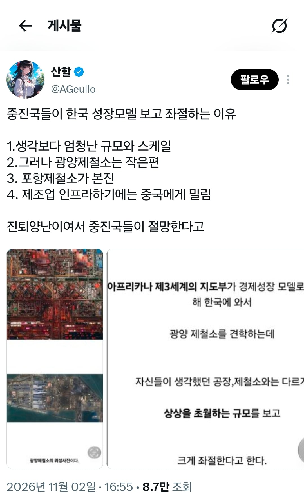
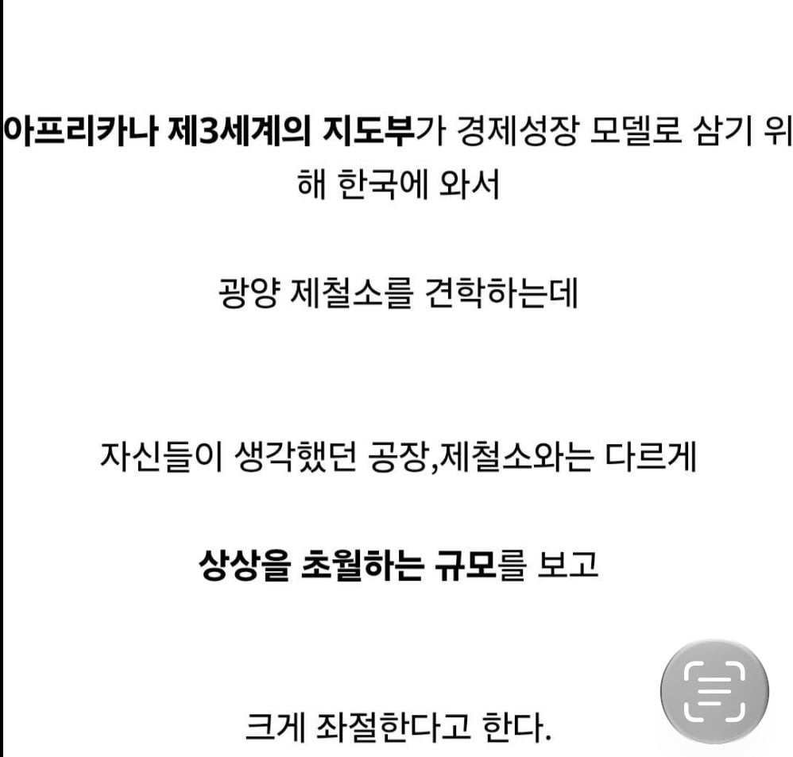
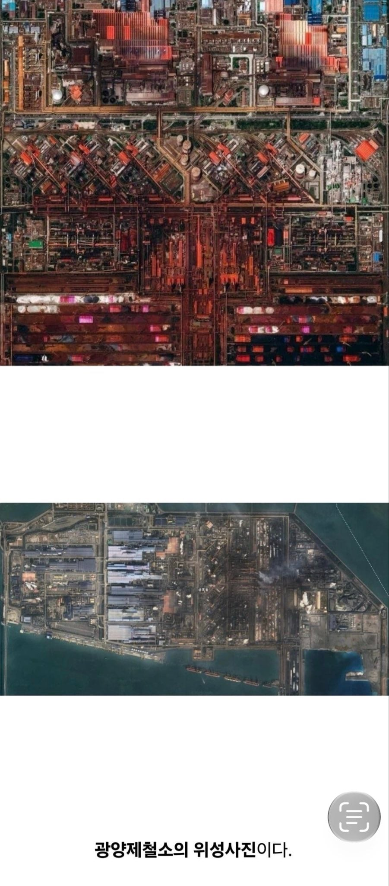

내 생각엔 일제시대 전부터도 중앙집권이 이뤄지고 있던게 큰 거 같은데
제3세계 국가들 보면 지방토호나 지방군벌 난립해서 중앙에서 통제가 안 돼서 중앙집권형 발전이 어려움
한국은 해방 이후에 독재가 이뤄지긴 했어도 중앙정부에서 군경이랑 공권력을 통제했는데 후진국들은 그게 안 됨
햐 잘못하면 정치귀신 붙을까봐 이런 말은 안썼는데 ㅋㅋㅋㅋㅋㅋㅋ
지금은 민간회사들 조차도 리더 한두사람의 선택이 그 산업 전체를 결정하기엔 너무 커졌지만 그랬던 시기도 있었지...
ㅇㅇ 나도 이게 가장 크다고 봄
우리나라야 조선 왕조 때 600년이 넘게 단일 왕조가 유지되면서 한국에 사는 모든 사람은 한국인이다라는 의식이 깊게 뿌리박혔는데, 외국은 국가 안에 묶여있긴 하지만 서로 다른 민족이다라는 의식이 강한 경우가 많음
그래서 한국인들이 쉽게 착각하는게 국가는 단일 민족으로 이루어졌다고 생각하는 거임. 일본=일본인, 중국=중국인 이런식으로
그러다보니까 중앙에서 어떤 사업을 진행하려고 해도, 이거는 너희 민족한테 유리한거 아니냐? 우리 민족은 왜 안 챙겨주냐는 식으로 화합이 안되서 발전에 어려움을 겪는 경우가 많음. 대표적인게 아프리카고
반도체같네
나라자체가 거대한 반도체
한국철강도 중국에 밀려 망하는 판 아니냐
저기도 망할뻔 했다던데
저게 있으니까 조선 중공업 등등 시너지가 있긴하지
전쟁나서 그나마 …
한국은 진짜 기적이다 이런거보면
광양제철소가 포항제철소보다 크기는 더 큰걸로 아는데
광양이 포항보다 훨씬 큼
ㅋㅋㅋㅋㅋㅋㅋㅋ
펙토리오 같네 ㅋㅋ
산화철 분진이 얼마나 많으면 사진이 녹이 슬었냐 ㅋㅋㅋㅋㅋㅋㅋㅋㅋㅋㅋㅋㅋㅋㅋㅋㅋㅋ
산업단계가 올라가면 보통 직종변환을 하는데
중국은 하도 쪽수가 많고 정부에서도 모든걸 다 중국내에서 해결하는 모양새를 바라는거 같아서
그 모든 산업단계를 움켜쥐고 있으니 다른 개발도상국들이 올라올 사다리가 없음
저거만 봐선 감이 안오는데 개도국 제철소나 산업단지랑 비교해서 우리나라건 얼마나 크길래
광양이 더 크다
기초적인 메인보드일 뿐이다
일단 한국도 일본도 미국도 거쳐왔던 제조업 국가 초기 정석 루트인 전세계에 싸구려 저가품들 대량으로 팔아먹기부터 중국이 ㅎㅎ ㅈㅅ! 하면서 안비켜주고 있잖아 ㅋㅋㅋ
ㅇㅇ 환경적 요인도 무시 못하고
진짜로 시대적 운도 있고...
뭘 찍어도 이걸 굳이 오답이라고 까지 해야하나? 싶을 정도로 틀린 말은 없는거 같음